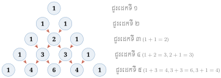
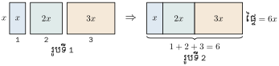
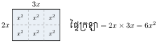
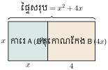
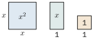
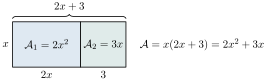
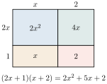
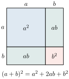
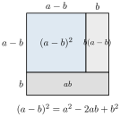
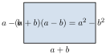

ត្រីកោណ Pascal និងពហុធា គេសង់ត្រីកោណ Pascal ដើម្បីងាយស្រួលចងចាំមេគុណទ្វេធានៃ \(\displaystyle (a+b)^n\) ៖

ឧទាហរណ៍ ៖
- ប្រាប់បានពីសញ្ញាណឯកធា ពហុធា ឯកធាដូចគ្នា និងដឺក្រេរបស់វា
- ធ្វើប្រមាណវិធីបូក ដក គុណ ចែក លើឯកធានិងពហុធា
- ដាក់ពហុធាជាផលគុណកត្តានិងពន្លាតកន្សោម ។
1. សញ្ញាណនៃពហុធា
1.1 ឯកធា
ឧទាហរណ៍ : សួនច្បារមួយរាងជាការដែលមានប្រវែងជ្រុងស្មើ និង \(\displaystyle x\) ម៉ែត្រ ។ បើគេគុណ 4 នឹងប្រវែងជ្រុង \(\displaystyle x\) ម៉ែត្រនោះ គេបាន \(\displaystyle 4x\) ម៉ែត្រ ដែលជាបរិមាត្រនៃសួនច្បារនោះ ។
កន្សោម \(\displaystyle 4x\), \(\displaystyle 2\), \(\displaystyle a\), \(\displaystyle 3b\), \(\displaystyle \sqrt{3}y\), \(\displaystyle \frac{4}{5}x^2\) ដែលប្រមាណវិធីលើអថេរមានតែវិធីគុណឬស្វ័យគុណដែលមាននិទស្សន្តជាចំនួនគត់វិជ្ជមានឬសូន្យ ហៅថា ឯកធា ។
សម្គាល់ : \(\displaystyle x^{-1}\), \(\displaystyle 3y^{-2}\), \(\displaystyle -\sqrt{2}ab^{-3}\) មិនមែនជាឯកធាទេ ពីព្រោះស្វ័យគុណមាននិទស្សន្តជាចំនួនអវិជ្ជមាន ។
ឯកធា គឺជាកន្សោមពីជគណិតដែលប្រមាណវិធីលើអថេរមានតែវិធីគុណ ឬស្វ័យគុណ ដែលមាននិទស្សន្តជាចំនួនគត់វិជ្ជមាន ឬសូន្យ ។
កំណត់អថេរនិងមេគុណនៃឯកធា \(\displaystyle \frac{2}{5}x^3\), \(\displaystyle 3ab^2\) និង \(\displaystyle -5\) ។
- តួ \(\displaystyle \frac{2}{5}x^3\) ជាឯកធាមានអថេរ \(\displaystyle x\) និងមេគុណ \(\displaystyle \frac{2}{5}\) ។
- តួ \(\displaystyle 3ab^2\) ជាឯកធាមានអថេរ \(\displaystyle a, b\) និងមេគុណ 3 ។
- \(\displaystyle -5\) ជាឯកធាមានមេគុណ \(\displaystyle -5\) (និទស្សន្តនៃអថេរ គឺសូន្យ) ព្រោះគេអាចសរសេរ \(\displaystyle -5 = -5x^0\) ដែល \(\displaystyle x \ne 0\) ។
ក្នុងកន្សោមខាងក្រោម តើកន្សោមណាខ្លះដែលជាឯកធា?
ចូរបំពេញអថេរ និងមេគុណនៃឯកធាក្នុងតារាងខាងក្រោម៖
| ឯកធា | អថេរ | មេគុណ |
| \(\displaystyle 2y\) | ||
| \(\displaystyle \sqrt{2}xy^3\) | ||
| \(\displaystyle -\frac{4}{5}abc^2\) |
1.2 ឯកធាដូចគ្នា
ឧទាហរណ៍ :
- កន្សោម \(\displaystyle -2bx^2y\) ជាឯកធាមានផ្នែកអថេរ \(\displaystyle bx^2y\) (អថេរ \(\displaystyle b, x\) និង \(\displaystyle y\)) និងមេគុណ \(\displaystyle -2\) ។
- កន្សោម \(\displaystyle \frac{3}{5}bx^2y\) ជាឯកធាមានផ្នែកអថេរ \(\displaystyle bx^2y\) (អថេរ \(\displaystyle b, x\) និង \(\displaystyle y\)) និងមេគុណ \(\displaystyle \frac{3}{5}\) ។
ឯកធាទាំងពីរខាងលើនេះ មានផ្នែកអថេរ \(\displaystyle bx^2y\) ដូចគ្នាហៅថា ឯកធាដូចគ្នា ។
ឯកធាដូចគ្នា គឺជាឯកធាដែលមានផ្នែកអថេរដូចគ្នា ។
តើកន្សោមទាំងពីរខាងក្រោមជាឯកធាដូចគ្នាដែរឬទេ?
- គេឱ្យកន្សោម \(\displaystyle -2xyz^2\) និង \(\displaystyle \frac{1}{2}xyz^2\)
- គេឱ្យកន្សោម \(\displaystyle 3xyz\) និង \(\displaystyle -xyz^2\) ។
- \(\displaystyle -2xyz^2\) និង \(\displaystyle \frac{1}{2}xyz^2\) ជាឯកធាដូចគ្នា ពីព្រោះឯកធាទាំងពីរមានផ្នែកអថេរ \(\displaystyle xyz^2\) ដូចគ្នា ។
- \(\displaystyle 3xyz\) និង \(\displaystyle -xyz^2\) ជាឯកធាមិនដូចគ្នាទេ ពីព្រោះឯកធាទាំងពីរមានផ្នែកអថេរមិនដូចគ្នា ។
ចូរជ្រើសរើសឯកធាដែលដូចគ្នា ក្នុងឯកធាខាងក្រោម៖
1.3 ដឺក្រេនៃឯកធា
ឧទាហរណ៍ 1 :
- ឯកធា \(\displaystyle -2x\) មានដឺក្រេ 1 ព្រោះនិទស្សន្តនៃអថេរ \(\displaystyle x\) ស្មើនឹង 1
- ឯកធា \(\displaystyle 3xy\) មានដឺក្រេ 2 ព្រោះផលបូកនិទស្សន្តនៃអថេរ \(\displaystyle x\) និង \(\displaystyle y\) គឺ \(\displaystyle 1+1=2\)
- ឯកធា \(\displaystyle ax^2y\) មានដឺក្រេ 4 ព្រោះផលបូកនិទស្សន្តនៃអថេរ \(\displaystyle a, x\) និង \(\displaystyle y\) គឺ \(\displaystyle 1+2+1=4\) ។
ចំពោះឯកធាដែលមានអក្សរច្រើន មានករណីខ្លះគេជ្រើសរើសអក្សរមួយចំនួនជាអថេរ ហើយផ្នែកដែលនៅសល់ជាមេគុណនៃឯកធានោះ ។
ឧទាហរណ៍ 2 : \(\displaystyle -10ax\) ជាឯកធាមានអថេរ \(\displaystyle x\) និងមេគុណ \(\displaystyle -10a\) និង \(\displaystyle \frac{1}{3}mbx^2yz\) ជាឯកធាមានអថេរ \(\displaystyle x, y, z\) និងមេគុណ \(\displaystyle \frac{1}{3}mb\) ។
ដឺក្រេនៃឯកធា គឺជាផលបូកនិទស្សន្តរបស់អថេរនីមួយៗនៃឯកធា ។
កំណត់អថេរ មេគុណ និងដឺក្រេនៃឯកធា \(\displaystyle -10ab^2c\) និង \(\displaystyle -\frac{1}{2}abx^2y^3z\) ។
កំណត់អថេរ មេគុណ និងដឺក្រេនៃឯកធា
| ឯកធា | អថេរ | មេគុណ | ដឺក្រេ |
| \(\displaystyle -10ab^2c\) | \(\displaystyle a, b\) និង \(\displaystyle c\) | \(\displaystyle -10\) | \(\displaystyle 1+2+1=4\) |
| \(\displaystyle -\frac{1}{2}abx^2y^3z\) | \(\displaystyle a, b, x, y\) និង \(\displaystyle z\) | \(\displaystyle -\frac{1}{2}\) | \(\displaystyle 1+1+2+3+1=8\) |
ចូរបំពេញមេគុណ និងដឺក្រេនៃឯកធាក្នុងតារាងខាងក្រោម៖
| ឯកធា | អថេរ | មេគុណ | ដឺក្រេ |
| \(\displaystyle -\frac{1}{2}x\) | \(\displaystyle x\) | ||
| \(\displaystyle -4ax^2y^3z\) | \(\displaystyle x, y\) និង \(\displaystyle z\) | ||
| \(\displaystyle 10ax^2y^3z^2\) | \(\displaystyle y, z\) និង \(\displaystyle x\) | ||
| \(\displaystyle \sqrt{2}bc^5d^2\) | \(\displaystyle b, c\) និង \(\displaystyle d\) |
1.4 វិធីបូកនិងដកឯកធា
ឧទាហរណ៍ 1 : ផ្ទៃក្រឡានៃចតុកោណកែងនីមួយៗក្នុងរូបទី 1 គឺ \(\displaystyle x\), \(\displaystyle 2x\) និង \(\displaystyle 3x\) រៀងគ្នា ។

រូបទី 2 គឺការផ្តុំនៃចតុកោណកែងនីមួយៗ ក្នុងរូបទី 1 ដែលមានផ្ទៃក្រឡា \(\displaystyle 6x\) ។ ដូច្នេះ ផលបូកផ្ទៃក្រឡានៃចតុកោណកែងក្នុងរូបទី 1 ស្មើផ្ទៃក្រឡាចតុកោណកែងក្នុងរូបទី 2 ។
ដូច្នេះ គេបាន \(\displaystyle x+2x+3x = (1+2+3)x = 6x\) (បូកមេគុណនិងមេគុណ ហើយគុណលទ្ធផលនឹងផ្នែកអថេរ) ។
ឧទាហរណ៍ 2 :
- ក. \(\displaystyle 4x-2x = (4-2)x = 2x\)
- ខ. \(\displaystyle x^2+3x^2 = (1+3)x^2 = 4x^2\) ។
ដើម្បីគណនាផលបូក ឬផលដកនៃឯកធាដូចគ្នាគេត្រូវធ្វើប្រមាណវិធីបូកឬដកតែផ្នែកមេគុណ រួចយកលទ្ធផលគុណនឹងផ្នែកអថេរ ។
គណនា \(\displaystyle A = 10x^2y + 5x^2y - x^2y\)
គណនា
គណនា
- ក. \(\displaystyle 5x+7x+x\)
- ខ. \(\displaystyle x^2-10x^2+11x^2\)
- គ. \(\displaystyle 8x^2y^2z+13x^2y^2z-x^2y^2z\) ។
មើលចម្លើយ
- ក. \(\displaystyle 13x\)
- ខ. \(\displaystyle 2x^2\)
- គ. \(\displaystyle 20x^2y^2z\) ។
1.5 វិធីគុណឯកធា
រំលឹក : បើ \(\displaystyle m\) និង \(\displaystyle n\) ជាចំនួនគត់វិជ្ជមាន ហើយ \(\displaystyle a \ne 0\) នោះ គេបានរូបមន្ត
- \(\displaystyle a^m a^n = a^{m+n}\)
- \(\displaystyle (a^m)^n = a^{mn}\)
- \(\displaystyle (ab)^n = a^n b^n\)
- \(\displaystyle \frac{a^m}{a^n} = a^{m-n}\) ។
ឧទាហរណ៍ : ស្រះទឹកមួយរាងជាចតុកោណកែងដែលមានវិមាត្រ \(\displaystyle 2x\) និង \(\displaystyle 3x\) ។ គេបានផ្ទៃក្រឡានៃស្រះទឹកនេះជាផលគុណរវាង \(\displaystyle 2x\) និង \(\displaystyle 3x\) គឺ \(\displaystyle (2x)(3x) = (2)(x)(3)(x)\) \(\displaystyle \leftarrow\) មេគុណនិងមេគុណ ហើយអថេរនិងអថេរ ។

\(\displaystyle (2)(3)(x)(x) = 6x^2\) \(\displaystyle \leftarrow\) ធ្វើប្រមាណវិធីគុណមេគុណនិងមេគុណ ហើយអថេរនិងអថេរ ។
ដើម្បីគណនាផលគុណនៃឯកធា គេផ្តុំមេគុណនិងមេគុណ ផ្នែកអថេរនិងផ្នែកអថេរ រួចធ្វើវិធីគុណនៃមេគុណ និងធ្វើវិធីគុណនៃផ្នែកអថេរ ។
គណនា
- ក. \(\displaystyle \left(\frac{1}{2}x\right)(-3x^2)\)
- ខ. \(\displaystyle (\sqrt{5}x^2y^3)(4xy)\) ។
- ក. \(\displaystyle \left(\frac{1}{2}x\right)(-3x^2) = \left(\frac{1}{2}\right)(-3)(x)(x^2) = -\frac{3}{2}x^3\)
- ខ. \(\displaystyle (\sqrt{5}x^2y^3)(4xy) = (\sqrt{5})(4)(x^2)(x)(y^3)(y) = 4\sqrt{5}x^3y^4\) ។
ក្នុងការប្រតិបត្តិ គេអាចគណនាដោយខ្លី \(\displaystyle (\sqrt{5}x^2y^3)(4xy) = 4\sqrt{5}x^3y^4\) ។
គណនា
- ក. \(\displaystyle (10ab)(a^2b^2)\)
- ខ. \(\displaystyle (\sqrt{2}xy^5)\left(-\frac{5}{7}x^2y^3\right)\)
- គ. \(\displaystyle \left(-\frac{13}{5}abc^2\right)\left(-\frac{1}{3}a^2bc^5\right)\)
- ឃ. \(\displaystyle \left(\frac{\sqrt{5}}{2}x^3y^5z^7\right)(-\sqrt{3}xyz)\) ។
មើលចម្លើយ
- ក. \(\displaystyle 10a^3b^3\)
- ខ. \(\displaystyle -\frac{5\sqrt{2}}{7}x^3y^8\)
- គ. \(\displaystyle \frac{13}{15}a^3b^2c^7\)
- ឃ. \(\displaystyle -\frac{\sqrt{15}}{2}x^4y^6z^8\) ។
1.6 វិធីចែកឯកធា
ឧទាហរណ៍ : គណនាបណ្តោយនៃស៊ុមរូបថតមួយមានរាងជាចតុកោណកែង គេដឹងថា ទទឹងស្មើនឹង \(\displaystyle 3x\) ម៉ែត្រ ហើយផ្ទៃក្រឡាស្មើនឹង \(\displaystyle 15x^2\) ម៉ែត្រការេ ។ ដើម្បីរកបណ្តោយ គេត្រូវធ្វើវិធីចែក
ដើម្បីចែកឯកធានឹងឯកធា គេត្រូវសរសេរភាគយកនិងភាគបែង ជាផលគុណកត្តា ហើយចែកមេគុណនឹងមេគុណ ផ្នែកអថេរនឹងអថេរ ។
គណនា
- ក. \(\displaystyle \frac{10ab^2}{5ab}\)
- ខ. \(\displaystyle -\frac{7x^2yz^2}{4xyz}\) ។
- ក. \(\displaystyle \frac{10ab^2}{5ab} = \frac{2 \times 5 \times a \times b \times b}{5 \times a \times b} = 2b\)
- ខ. \(\displaystyle -\frac{7x^2yz^2}{4xyz} = -\frac{7 \times x \times x \times y \times z \times z}{4 \times x \times y \times z} = -\frac{7}{4}xz\) ។
ក្នុងការប្រតិបត្តិគេអាចគណនាដោយខ្លី \(\displaystyle -\frac{7x^2yz^2}{4xyz} = -\frac{7}{4}xz\) ។
គណនា
- ក. \(\displaystyle \frac{a^2x^2}{10ax^2}\)
- ខ. \(\displaystyle \frac{-\sqrt{5}x^7y^2z^3}{4x^2yz}\)
- គ. \(\displaystyle \frac{32a^{10}b^5c^6}{6abc^3}\)
- ឃ. \(\displaystyle \frac{-12m^7n^2}{15m^2n}\)
មើលចម្លើយ
- ក. \(\displaystyle \frac{a}{10}\)
- ខ. \(\displaystyle -\frac{\sqrt{5}}{4}x^5yz^2\)
- គ. \(\displaystyle \frac{16}{3}a^9b^4c^3\)
- ឃ. \(\displaystyle -\frac{4}{5}m^5n\) ។
2. ពហុធា
ឧទាហរណ៍ : សួនបន្លែមួយរាងជាចតុកោណកែង ដែលផ្តុំដោយការេមានជ្រុងប្រវែង \(\displaystyle x\) ម៉ែត្រ និងចតុកោណកែងដែលមានវិមាត្រ \(\displaystyle x\) ម៉ែត្រ និង 4 ម៉ែត្រ ។

សួនបន្លែនេះមានផ្ទៃក្រឡាសរុបជាផលបូកផ្ទៃក្រឡានៃការេ A និងផ្ទៃក្រឡានៃចតុកោណកែង B ដែលស្មើនឹង \(\displaystyle x^2+4x\) ម៉ែត្រការេ ។
កន្សោម \(\displaystyle x^2+4x\) ជាផលបូកនៃឯកធា \(\displaystyle x^2\) និង \(\displaystyle 4x\) ហៅថាពហុធាដែលមាន \(\displaystyle x^2\) និង \(\displaystyle 4x\) ជាតួ ។
កន្សោម \(\displaystyle \frac{1}{2}x^3-5x = \frac{1}{2}x^3+(-5x)\) ជាផលបូកនៃឯកធា \(\displaystyle \frac{1}{2}x^3\) និង \(\displaystyle -5x\) ហៅថាពហុធាដែលមាន \(\displaystyle \frac{1}{2}x^3\) និង \(\displaystyle -5x\) ជាតួ ។
សម្គាល់ : ពហុធាដែលមានមួយតួហៅថាឯកធា ពហុធាដែលមានពីរតួហៅថាទ្វេធា និងពហុធាដែលមានបីតួហៅថាត្រីធា ។
ពហុធា គឺជាផលបូកនៃច្រើនឯកធាខុសគ្នា ហើយឯកធានីមួយៗ នោះហៅថា តួនៃពហុធា ។
តើពហុធា \(\displaystyle 4x-3\) និង \(\displaystyle -\frac{1}{2}x^3+3x-5\) មួយណាទ្វេធានិងមួយណាជាត្រីធា?
\(\displaystyle 4x-3\) ជាទ្វេធា និង \(\displaystyle -\frac{1}{2}x^3+3x-5\) ជាត្រីធា ។
កំណត់អថេរនិងតួនៃពហុធា \(\displaystyle x-2\), \(\displaystyle \frac{3}{4}x^2-2x+5\) និង \(\displaystyle -x^2y+3y+20\) ។
កំណត់អថេរនិងតួនៃពហុធា
| ពហុធា | អថេរ | តួនៃពហុធា |
| \(\displaystyle x-2\) | \(\displaystyle x\) | \(\displaystyle x\) និង \(\displaystyle -2\) |
| \(\displaystyle \frac{3}{4}x^2-2x+5\) | \(\displaystyle x\) | \(\displaystyle \frac{3}{4}x^2\), \(\displaystyle -2x\) និង 5 |
| \(\displaystyle -x^2y+3y+20\) | \(\displaystyle x\) និង \(\displaystyle y\) | \(\displaystyle -x^2y\), \(\displaystyle 3y\) និង 20 |
ក្នុងកន្សោមខាងក្រោមនេះ តើកន្សោមណាខ្លះជាពហុធា រួចបញ្ជាក់តួនៃពហុធានីមួយៗ?
- ក. \(\displaystyle 3x^2-\frac{1}{2}\)
- ខ. \(\displaystyle -\frac{1}{3x}+5x^2\)
- គ. \(\displaystyle 3x+\sqrt{5}y-2xy^2\)
- ឃ. \(\displaystyle 2x^{-2}+5x\)
- ង. \(\displaystyle \frac{m^2+5}{m^2-4}\)
- ច. \(\displaystyle 12x^2yz\)
- ឆ. \(\displaystyle 8x^4-2x+\frac{1}{x}\)
- ជ. \(\displaystyle 2x^{-2}yz^3\)
ចូរសរសេរពហុធាដែលតំណាងឱ្យផ្ទៃក្រឡាសរុបនៃផ្ទៃទាំងអស់ក្នុងរូបខាងក្រោម៖

2.1 ដឺក្រេនៃពហុធា
ឧទាហរណ៍ :
- \(\displaystyle 5x+3\) មានដឺក្រេខ្ពស់នៃ \(\displaystyle x\) ស្មើ 1
- \(\displaystyle x^2-3x+2\) មានដឺក្រេខ្ពស់នៃ \(\displaystyle x\) ស្មើ 2
- \(\displaystyle -2x^2-5xy^2+1\) មានដឺក្រេខ្ពស់ស្មើ 3 ចំពោះអថេរ \(\displaystyle x\) និង \(\displaystyle y\) ។
ដឺក្រេនៃពហុធា គឺជាដឺក្រេរបស់តួដែលមានដឺក្រេខ្ពស់ជាងគេ ។
កំណត់ដឺក្រេនិងលំដាប់ស្វ័យគុណនៃពហុធា \(\displaystyle -3x+2\) និង \(\displaystyle 1-3x+2x^2\) ។
- ពហុធា \(\displaystyle -3x+2\) ជាពហុធាដឺក្រេទី 1 នៃ \(\displaystyle x\) រៀបតាមលំដាប់ស្វ័យគុណចុះ ។
- ពហុធា \(\displaystyle 1-3x+2x^2\) ជាពហុធាដឺក្រេទី 2 នៃ \(\displaystyle x\) រៀបតាមលំដាប់ស្វ័យគុណកើន ។
ចូរបំពេញតារាងខាងក្រោម៖
| ពហុធា | អថេរ | ដឺក្រេ | រៀបតាមលំដាប់កើននៃដឺក្រេ | រៀបតាមលំដាប់ចុះនៃដឺក្រេ |
| \(\displaystyle x+2-4x^2\) | \(\displaystyle x\) | |||
| \(\displaystyle t^3+3bt-2b^2t^2+b^3\) | ||||
| \(\displaystyle \frac{1}{2}my^2-3+my+\frac{1}{3}y^4\) | \(\displaystyle y\) |
2.2 វិធីបូកនិងវិធីដកពហុធា
ឧទាហរណ៍ : គេឱ្យពហុធា \(\displaystyle A = 2x^2+4x-2\) និង \(\displaystyle B = 4x^2-3x-8\) ។ គណនា \(\displaystyle A + B\) ។
ដើម្បីបូកឬដកពីរពហុធា គេត្រូវបូកឬដកឯកធាដូចគ្នា ។
គេឱ្យពហុធា \(\displaystyle M = -3x^2+x-5\) និង \(\displaystyle N = 7x^2-3x+1\) ។ គណនា \(\displaystyle M - N\) ។
គណនា
គណនា \(\displaystyle M+N\) និង \(\displaystyle M-N\)
- ក. \(\displaystyle M = x^2-3x+5\) និង \(\displaystyle N = 2x^2+x-2\)
- ខ. \(\displaystyle M = 2x^2+y+10\) និង \(\displaystyle N = x^2-10y+20\)
- គ. \(\displaystyle M = \frac{1}{2}x^2-6x+7\) និង \(\displaystyle N = \frac{3}{2}x^2+5x-4\) ។
មើលចម្លើយ
- ក. \(\displaystyle M+N = 3x^2-2x+3\), \(\displaystyle M-N = -x^2-4x+7\)
- ខ. \(\displaystyle M+N = 3x^2-9y+30\), \(\displaystyle M-N = x^2+11y-10\)
- គ. \(\displaystyle M+N = 2x^2-x+3\), \(\displaystyle M-N = -x^2-11x+11\) ។
វិធីបូកឬដកខាងលើនេះ គេអាចដោះស្រាយតាមរបៀបដូចខាងក្រោម៖
គេឱ្យពហុធា \(\displaystyle A = x^4-3x^3+5x^2-3\) និងកន្សោម \(\displaystyle B = 2x^4-3x^2+4x+1\) ។ គណនា \(\displaystyle A+B\) និង \(\displaystyle A-B\) ។
| គណនា \(\displaystyle A+B\) |
| \(\displaystyle \begin{array}{rrrrrr} & x^4 & -3x^3 & +5x^2 & & -3 \\ + & 2x^4 & & -3x^2 & +4x & +1 \\ & 3x^4 & -3x^3 & +2x^2 & +4x & -2 \end{array}\) |
| គណនា \(\displaystyle A-B\) |
| \(\displaystyle \begin{array}{rrrrrr} & x^4 & -3x^3 & +5x^2 & & -3 \\ - & 2x^4 & & -3x^2 & +4x & +1 \\ & -x^4 & -3x^3 & +8x^2 & -4x & -4 \end{array}\) |
តាមរបៀបដូចខាងលើ គណនា \(\displaystyle A+B\) និង \(\displaystyle A-B\) ។
- ក. \(\displaystyle A = x^3+2\) និង \(\displaystyle B = x^2+3x\)
- ខ. \(\displaystyle A = x^4-3x^2+1\) និង \(\displaystyle B = x^5+2x^3+3x+2\)
- គ. \(\displaystyle A = x^3+3x^2y+10xy-4\) និង \(\displaystyle B = x^3-3xy\) ។
មើលចម្លើយ
- ក. \(\displaystyle A+B = x^3+x^2+3x+2\), \(\displaystyle A-B = x^3-x^2-3x+2\)
- ខ. \(\displaystyle A+B = x^5+x^4+2x^3-3x^2+3x+3\), \(\displaystyle A-B = -x^5+x^4-2x^3-3x^2-3x-1\)
- គ. \(\displaystyle A+B = 2x^3+3x^2y+7xy-4\), \(\displaystyle A-B = 3x^2y+13xy-4\) ។
ត្រីកោណមួយមានប្រវែងជ្រុងគឺ \(\displaystyle 2x+y\), \(\displaystyle 3x+7y\) និង \(\displaystyle 4x-y\) ។ គណនាបរិមាត្រនៃត្រីកោណនេះ ។
មើលចម្លើយ
\(\displaystyle 9x+7y\) ។
2.3 វិធីគុណលើពហុធា
ឧទាហរណ៍ 1 : ផ្ទាំងគំនូរមួយរាងចតុកោណកែងដែលមានវិមាត្រ \(\displaystyle 2x+3\) និង \(\displaystyle x\) គិតជាម៉ែត្រ ដូចរូបខាងស្តាំ ។

តាង \(\displaystyle \mathcal{A}\) ជាផ្ទៃក្រឡានៃផ្ទាំងគំនូរ នោះគេបាន \(\displaystyle \mathcal{A} = x(2x+3)\) ។
ម្យ៉ាងទៀតផ្ទាំងគំនូនេះផ្តុំដោយចតុកោណកែងពីរដែលមានផ្ទៃក្រឡាគឺ \(\displaystyle \mathcal{A}_1\) និង \(\displaystyle \mathcal{A}_2\) រៀងគ្នា ។
គេបាន \(\displaystyle \mathcal{A} = \mathcal{A}_1 + \mathcal{A}_2 = x(2x+3) = 2x^2+3x\) (គុណគ្រប់តួនៃពហុធាទី 1 និងគ្រប់តួនៃពហុធាទី 2 ហើយបានលទ្ធផលបង្រួមជាស្រេច) ។
ដូច្នេះ គេបាន \(\displaystyle \mathcal{A} = x(2x+3) = 2x^2+3x\) ។
ឧទាហរណ៍ 2 : ទីធ្លានៃសាលារៀនមួយមានរាងជាចតុកោណកែងដែលមានវិមាត្រ \(\displaystyle 2x+1\) និង \(\displaystyle x+2\) គិតជាម៉ែត្រ ។

គេបានផ្ទៃក្រឡានៃចតុកោណកែងគឺ \(\displaystyle (2x+1)(x+2) = 2x^2+4x+x+2\) គុណគ្រប់តួនៃពហុធាទី 1 និងគ្រប់តួនៃពហុធាទី 2
\(\displaystyle = 2x^2+5x+2\) បង្រួមលទ្ធផល ។
ដើម្បីគុណពហុធានិងពហុធា គេយកតួនីមួយៗនៃពហុធាទី 1 គុណគ្រប់តួនៃពហុធាទី 2 រួចបង្រួមលទ្ធផល ។
គណនាផលគុណនៃពហុធា \(\displaystyle 4x^2\) និង \(\displaystyle 2x^3+xy-3y^2\)
គណនា
- ក. \(\displaystyle (2ab)(-3a^2b^2)^3\)
- ខ. \(\displaystyle (-x+4)\left(\frac{1}{2}x+3\right)\)
- គ. \(\displaystyle (x^3+xy-4y^2)(x+y)\) ។
មើលចម្លើយ
- ក. \(\displaystyle -54a^7b^7\)
- ខ. \(\displaystyle -\frac{1}{2}x^2-x+12\)
- គ. \(\displaystyle x^4+x^3y+x^2y-3xy^2-4y^3\) ។
គេអាចគណនាផលគុណនៃពហុធានិងពហុធាតាមរបៀបដូចខាងក្រោមបានដែរ ។
គណនាផលគុណនៃពហុធា \(\displaystyle 1+x^3-6x\) និង \(\displaystyle 2x-3\)
ជាដំបូង គេត្រូវរៀបពហុធាតាមលំដាប់ដឺក្រេចុះ ឬកើន
\(\displaystyle \begin{array}{rrrrrrl} & & x^3 & & -6x & +1 & \\ \times & & & & 2x & -3 & \\ \hline & 2x^4 & & -12x^2 & +2x & & \quad (x^3-6x+1)(2x) \\ + & & -3x^3 & & +18x & -3 & \quad (x^3-6x+1)(-3) \\ \hline & 2x^4 & -3x^3 & -12x^2 & +20x & -3 & \end{array}\)
គណនាប្រមាណវិធីគុណខាងក្រោម៖
- ក. \(\displaystyle (2x^2-4x+1)(3x-4)\)
- ខ. \(\displaystyle (a^2-3a+5)(a^2+4a-3)\)
- គ. \(\displaystyle (-3x+x^2-1)(2+x-5x^2)\)
- ឃ. \(\displaystyle (4x+3)(2x-x^3-1)\) ។
មើលចម្លើយ
- ក. \(\displaystyle 6x^3-20x^2+19x-4\)
- ខ. \(\displaystyle a^4+a^3-10a^2+29a-15\)
- គ. \(\displaystyle -5x^4+16x^3+4x^2-7x-2\)
- ឃ. \(\displaystyle -4x^4-3x^3+8x^2+2x-3\)
3. រូបមន្តពន្លាត
3.1 ពន្លាតការេនៃទ្វេធា
ពន្លាត \(\displaystyle (a+b)^2\)
បើ \(\displaystyle a\) និង \(\displaystyle b\) វិជ្ជមាន ។ តាមរូប \(\displaystyle (a+b)^2\) គឺជាផ្ទៃក្រឡាការដែលមានរង្វាស់ជ្រុង \(\displaystyle (a+b)\) ហើយផ្ទៃក្រឡានេះស្មើផលបូកផ្ទៃក្រឡាផ្នែកតូចៗខាងក្នុង ។

ជាទូទៅ \(\displaystyle (a+b)^2 = (a+b)(a+b) = a^2+ab+ba+b^2 = a^2+2ab+b^2\)
ដូច្នេះ
ពន្លាត \(\displaystyle (x+1)^2\)
\(\displaystyle (x+1)^2 = x^2+2 \times x \times 1+1^2 = x^2+2x+1\)
ពន្លាត \(\displaystyle \left(2x+\frac{3}{2}y\right)^2\)
\(\displaystyle \left(2x+\frac{3}{2}y\right)^2 = (2x)^2+2(2x)\left(\frac{3}{2}y\right)+\left(\frac{3}{2}y\right)^2 = 4x^2+6xy+\frac{9}{4}y^2\) ។
ពន្លាតកន្សោមខាងក្រោម៖
- ក. \(\displaystyle (x+5)^2\)
- ខ. \(\displaystyle \left(\frac{1}{2}x+3\right)^2\)
- គ. \(\displaystyle \left(\frac{4}{5}x+\frac{y}{2}\right)^2\) ។
ពន្លាត \(\displaystyle (a-b)^2\)
បើ \(\displaystyle a\) និង \(\displaystyle b\) វិជ្ជមាន ហើយ \(\displaystyle a>b\) ។ តាមរូប \(\displaystyle (a-b)^2\) គឺជាផ្ទៃក្រឡាការដែលមានរង្វាស់ជ្រុង \(\displaystyle a-b\) ។

គេបាន
ដូច្នេះ
ពន្លាត \(\displaystyle (x-1)^2\) ។
\(\displaystyle (x-1)^2 = x^2-2 \cdot x \cdot 1+1^2 = x^2-2x+1\) ។
ពន្លាត \(\displaystyle \left(\frac{1}{2}x-y\right)^2\) ។
\(\displaystyle \left(\frac{1}{2}x-y\right)^2 = \left(\frac{1}{2}x\right)^2-2\left(\frac{1}{2}x\right)y+y^2 = \frac{1}{4}x^2-xy+y^2\) ។
ពន្លាតកន្សោមខាងក្រោម៖
- ក. \(\displaystyle (x-5)^2\)
- ខ. \(\displaystyle \left(\frac{3}{2}x-2y\right)^2\)
- គ. \(\displaystyle \left(\frac{4}{5}x-\frac{y}{2}\right)^2\) ។
ពន្លាត \(\displaystyle (a+b)(a-b)\)
បើ \(\displaystyle a\) និង \(\displaystyle b\) វិជ្ជមាន ហើយ \(\displaystyle a>b\) ។ តាមរូបគេបានផ្ទៃក្រឡាចតុកោណកែងផ្នែកពណ៌ខៀវគឺ \(\displaystyle (a+b)(a-b)\) ។ ម្យ៉ាងទៀតផ្ទៃក្រឡាដដែលនេះស្មើនឹង \(\displaystyle a(a+b)-ab-b^2 = a^2+ab-ab-b^2\) (\(\displaystyle a(a+b)\) ជាផ្ទៃក្រឡាចតុកោណកែងទាំងមូល \(\displaystyle = a^2-b^2\)) ។

តាមពន្លាត \(\displaystyle (a+b)(a-b) = a^2-ab+ba-b^2 = a^2-b^2\)
ដូច្នេះ
ពន្លាត \(\displaystyle (x+3)(x-3)\) ។
\(\displaystyle (x+3)(x-3) = x^2-3^2 = x^2-9\) ។
ពន្លាត \(\displaystyle \left(\frac{1}{2}x+3y\right)\left(\frac{1}{2}x-3y\right)\) ។
\(\displaystyle \left(\frac{1}{2}x+3y\right)\left(\frac{1}{2}x-3y\right) = \left(\frac{1}{2}x\right)^2-(3y)^2 = \frac{1}{4}x^2-9y^2\) ។
ពន្លាតកន្សោមខាងក្រោម៖
- ក. \(\displaystyle (x-5)(x+5)\)
- ខ. \(\displaystyle \left(10x+\frac{1}{2}y\right)\left(10x-\frac{1}{2}y\right)\)
- គ. \(\displaystyle \left(\frac{4}{5}x-\frac{y}{2}\right)\left(\frac{4}{5}x+\frac{y}{2}\right)\)
• ពន្លាត \(\displaystyle (a+b+c)^2\)
ដូច្នេះ
ពន្លាតកន្សោម \(\displaystyle (x+y+2)^2\)
\(\displaystyle (x+y+2)^2 = x^2+y^2+2xy+4x+4y+4\) ។
ពន្លាតកន្សោមខាងក្រោម៖
- ក. \(\displaystyle (3+a+2b)^2\)
- ខ. \(\displaystyle (x^2+y+z^2)^2\)
- គ. \(\displaystyle \left(\frac{1}{2}x^2+3y+\frac{3}{4}z\right)^2\) ។
3.2 ពន្លាតគូបនៃទ្វេធា
ពន្លាត \(\displaystyle (a+b)^3\)
ដូច្នេះ
ពន្លាត \(\displaystyle (x+1)^3\) ។
\(\displaystyle (x+1)^3 = x^3+3x^2+3x+1\) ។
ពន្លាតកន្សោមខាងក្រោម៖
- ក. \(\displaystyle (x+5)^3\)
- ខ. \(\displaystyle (x+3y)^3\)
- គ. \(\displaystyle (2x+5y)^3\)
- ឃ. \(\displaystyle \left(\frac{1}{2}x^2+y\right)^3\) ។
ពន្លាត \(\displaystyle (a-b)^3\)
ដូច្នេះ
ចូរពន្លាត \(\displaystyle (x-1)^3\) ។
\(\displaystyle (x-1)^3 = x^3-3x^2+3x-1\) ។
ពន្លាតកន្សោមខាងក្រោម៖
- ក. \(\displaystyle (x-5)^3\)
- ខ. \(\displaystyle (2x-3y)^3\)
- គ. \(\displaystyle \left(\frac{1}{2}x^2-y\right)^3\)
- ឃ. \(\displaystyle (ab-3cd)^3\) ។
ពន្លាត \(\displaystyle (a-b)(a^2+ab+b^2)\)
ដូច្នេះ
ពន្លាត \(\displaystyle (x-1)(x^2+x+1)\) ។
\(\displaystyle (x-1)(x^2+x+1) = x^3-1\) ។
ពន្លាតកន្សោមខាងក្រោម៖
- ក. \(\displaystyle (x-3)(x^2+3x+9)\)
- ខ. \(\displaystyle (2x-1)(4x^2+2x+1)\)
- គ. \(\displaystyle (\sqrt{2}x-3y)(2x^2+3\sqrt{2}xy+9y^2)\) ។
មើលចម្លើយ
- ក. \(\displaystyle x^3-27\)
- ខ. \(\displaystyle 8x^3-1\)
- គ. \(\displaystyle 2\sqrt{2}x^3-27y^3\) ។
ពន្លាត \(\displaystyle (a+b)(a^2-ab+b^2)\)
ដូច្នេះ
ពន្លាត \(\displaystyle (x+1)(x^2-x+1)\) ។
\(\displaystyle (x+1)(x^2-x+1) = x^3+1\) ។
ពន្លាតកន្សោមខាងក្រោម៖
- ក. \(\displaystyle (x+2)(x^2-2x+4)\)
- ខ. \(\displaystyle (3x+5)(9x^2-15x+25)\)
- គ. \(\displaystyle \left(\frac{1}{4}x+4y\right)\left(\frac{1}{16}x^2-xy+16y^2\right)\) ។
មើលចម្លើយ
- ក. \(\displaystyle x^3+8\)
- ខ. \(\displaystyle 27x^3+125\)
- គ. \(\displaystyle \frac{x^3}{64}+64y^3\) ។
4. ការដាក់កន្សោមជាផលគុណកត្តា
4.1 ការដាក់កន្សោមជាកត្តារួម
ឧទាហរណ៍ 1 : គេឱ្យកន្សោម \(\displaystyle ab+ac-ad\) ។ គេសង្កេតឃើញថា គ្រប់តួនៃកន្សោមនេះមាន \(\displaystyle a\) ដូចគ្នា ។ ដូច្នេះ កន្សោម \(\displaystyle ab+ac-ad\) អាចសរសេរជា \(\displaystyle ab+ac-ad = a(b+c-d)\) គេថាគេបានដាក់ \(\displaystyle a\) ជាកត្តារួម រួចកន្សោម \(\displaystyle a(b+c-d)\) ហៅថា ផលគុណកត្តា ។
ឧទាហរណ៍ 2 : តួនីមួយៗនៃកន្សោម \(\displaystyle x(2y-3)-2(2y-3)\) មាន \(\displaystyle (2y-3)\) ដូចគ្នា ។ គេអាចដាក់ \(\displaystyle (2y-3)\) ជាកត្តារួម \(\displaystyle x(2y-3)-2(2y-3) = (2y-3)(x-2)\) ។
ដាក់កន្សោម \(\displaystyle (3x+1)(x-2)+(2-x)y\) ជាផលគុណកត្តា
ដាក់កន្សោមខាងក្រោមជាផលគុណកត្តា
- ក. \(\displaystyle 6kp^2-21p^2\)
- ខ. \(\displaystyle 2p^2q-4pqr\)
- គ. \(\displaystyle 24x^3y+30x^2y^3\)
- ឃ. \(\displaystyle a^2bc-ab^2c+abc^2\)
ដាក់កន្សោមខាងក្រោមជាផលគុណកត្តា
- ក. \(\displaystyle 5x(x-3)-4(3-x)\)
- ខ. \(\displaystyle 6x-3xy-2+y\)
- គ. \(\displaystyle 5x+10xy+4+8y\) ។
មើលចម្លើយ
- ក. \(\displaystyle 3p^2(2k-7)\)
- ខ. \(\displaystyle 2pq(p-2r)\)
- គ. \(\displaystyle 6x^2y(4x+5y^2)\)
- ឃ. \(\displaystyle abc(a-b+c)\) ។
- ក. \(\displaystyle (x-3)(5x+4)\)
- ខ. \(\displaystyle (2-y)(3x-1)\)
- គ. \(\displaystyle (5x+4)(2y+1)\) ។
4.2 ការដាក់កន្សោមដឺក្រេទី 2 ជាផលគុណកត្តា
តាមរូបមន្តពន្លាត និងលក្ខណៈឆ្លុះនៃសមភាព \(\displaystyle A=B \Leftrightarrow B=A\) ។ គេបាន
ដាក់ជាផលគុណកត្តាចំពោះកន្សោមខាងក្រោម៖
- ក. \(\displaystyle x^2+6x+9\)
- ខ. \(\displaystyle m^2-20m+100\)
- គ. \(\displaystyle 4p^2q^2-9t^2\) ។
ដាក់ជាផលគុណកត្តា
- ក. \(\displaystyle x^2+6x+9\) ប្រើរូបមន្ត \(\displaystyle a^2+2ab+b^2 = (a+b)^2\)
\(\displaystyle x^2+6x+9 = x^2+2 \times 3 \times x + 3^2 = (x+3)^2\) - ខ. \(\displaystyle m^2-20m+100\) ប្រើរូបមន្ត \(\displaystyle a^2-2ab+b^2 = (a-b)^2\)
\(\displaystyle m^2-20m+100 = m^2-2 \times 10 \times m + 10^2 = (m-10)^2\) - គ. \(\displaystyle 4p^2q^2-9t^2\) ប្រើរូបមន្ត \(\displaystyle a^2-b^2 = (a+b)(a-b)\)
\(\displaystyle 4p^2q^2-9t^2 = (2pq)^2-(3t)^2 = (2pq+3t)(2pq-3t)\) ។
ដាក់កន្សោមខាងក្រោមជាផលគុណកត្តា
- ក. \(\displaystyle x^2+10x+25\)
- ខ. \(\displaystyle a^2b^2+4abc+4c^2\)
- គ. \(\displaystyle y^2-16y+64\)
- ឃ. \(\displaystyle 4m^2-20mn+25n^2\)
- ង. \(\displaystyle 81x^2-64y^2\)
- ច. \(\displaystyle 144a^2b^2-169c^2\) ។
មើលចម្លើយ
- ក. \(\displaystyle (x+5)^2\)
- ខ. \(\displaystyle (ab+2c)^2\)
- គ. \(\displaystyle (y-8)^2\)
- ឃ. \(\displaystyle (2m-5n)^2\)
- ង. \(\displaystyle (9x-8y)(9x+8y)\)
- ច. \(\displaystyle (12ab-13c)(12ab+13c)\) ។
ដាក់ជាផលគុណកត្តានៃកន្សោមដែលមានរាង \(\displaystyle x^2+(a+b)x+ab\)
ដូច្នេះ
ដាក់កន្សោមខាងក្រោមជាផលគុណកត្តា
- ក. \(\displaystyle x^2+8x+12\)
- ខ. \(\displaystyle y^2-10y+24\)
- គ. \(\displaystyle m^2-12m+32\) ។
មើលចម្លើយ
- ក. \(\displaystyle (x+2)(x+6)\)
- ខ. \(\displaystyle (y-4)(y-6)\)
- គ. \(\displaystyle (m-4)(m-8)\) ។
បំពេញចំនួនគត់វិជ្ជមានក្នុងចន្លោះ ដើម្បីឱ្យកន្សោមនីមួយៗមានទម្រង់ជាការេនៃទ្វេធាដឺក្រេទី 1
- ក. \(\displaystyle x^2+4x+\dots\)
- ខ. \(\displaystyle x^2-6x+\dots\)
- គ. \(\displaystyle a^2+\dots a+1\)
- ឃ. \(\displaystyle 4a^2-\dots a+9\)
4.3 ការដាក់កន្សោម \(\displaystyle acx^2+(ad+bc)x+bd\) ជាផលគុណកត្តា
គេអាចសរសេរ
ដូច្នេះ គេបានរូបមន្ត
ដាក់ជាកត្តានូវកន្សោមខាងក្រោម ដោយប្រើរូបមន្ត (5)
- ក. \(\displaystyle 6x^2-13x-15\)
- ខ. \(\displaystyle 12x^2-25xy+12y^2\) ។
- ក.
តាង \(\displaystyle a, b, c\) និង \(\displaystyle d\) ជាបួនចំនួនផ្ទៀងផ្ទាត់សមីការខាងក្រោម៖
\[\begin{cases} ac = 6 \\ bd = -15 \end{cases} \quad (1)\]រកតម្លៃដែលផ្ទៀងផ្ទាត់ផងដែរចំពោះសមីការ \(\displaystyle ad+bc = -13\) (2)
ការគណនាដែលបង្ហាញខាងស្តាំគេថា សមីការ (1) និង (2) គឺផ្ទៀងផ្ទាត់ដោយ \(\displaystyle a=6, c=1, b=5, d=-3\) ។\(\displaystyle ac\) \(\displaystyle bd\) \(\displaystyle ad+bc\) \(\displaystyle a\) … \(\displaystyle b\) \(\displaystyle \rightarrow\) \(\displaystyle bc\) \(\displaystyle c\) … \(\displaystyle d\) \(\displaystyle \rightarrow\) \(\displaystyle ad\) \(\displaystyle ad+bc\) 6 \(\displaystyle -15\) \(\displaystyle -13\) 6 … 5 \(\displaystyle \rightarrow\) 5 1 … \(\displaystyle -3\) \(\displaystyle \rightarrow\) \(\displaystyle -18\) \(\displaystyle -13\) ដូច្នេះ \(\displaystyle 6x^2-13x-15 = (6x+5)(x-3)\) ។
- ខ.
គេឱ្យ \(\displaystyle 12x^2-25xy+12y^2\) គឺជាកន្សោមដឺក្រេទី 2 នៃ \(\displaystyle x\) ហើយការគណនាដូចបង្ហាញខាងស្តាំ ។
12 \(\displaystyle 12y^2\) \(\displaystyle -25y\) 3 … \(\displaystyle -4y\) \(\displaystyle \rightarrow\) \(\displaystyle -16y\) 4 … \(\displaystyle -3y\) \(\displaystyle \rightarrow\) \(\displaystyle -9y\) \(\displaystyle -25y\) ដូច្នេះ \(\displaystyle 12x^2-25xy+12y^2 = (3x-4y)(4x-3y)\) ។
ដាក់ជាផលគុណកត្តានូវកន្សោមខាងក្រោម៖
- ក. \(\displaystyle 2x^2+3x+1\)
- ខ. \(\displaystyle 2x^2-13x+6\)
- គ. \(\displaystyle -3a^2+5a+2\)
- ឃ. \(\displaystyle 6p^2-4pq-16q^2\)
- ង. \(\displaystyle 8x^2-26xy+15y^2\)
- ច. \(\displaystyle -35x^2-16xy+12y^2\) ។
មើលចម្លើយ
- ក. \(\displaystyle (2x+1)(x+1)\)
- ខ. \(\displaystyle (2x-1)(x-6)\)
- គ. \(\displaystyle (3a+1)(2-a)\)
- ឃ. \(\displaystyle (3p+4q)(2p-4q)\)
- ង. \(\displaystyle (2x-5y)(4x-3y)\)
- ច. \(\displaystyle (7x+6y)(2y-5x)\) ។
4.4 ការដាក់កន្សោមដឺក្រេទី 3 ជាផលគុណកត្តា
រូបមន្តផលបូកនិងផលដកនៃគូប ។ តាមរូបមន្តពន្លាតនិងលក្ខណៈឆ្លុះនៃសមភាព \(\displaystyle A=B \Rightarrow B=A\) ។ គេបាន
ដាក់កន្សោមខាងក្រោមជាផលគុណកត្តា
- ក. \(\displaystyle x^3+27\)
- ខ. \(\displaystyle 8a^3-1\)
- ក. \(\displaystyle x^3+27 = x^3+3^3 = (x+3)(x^2-3x+9)\)
- ខ. \(\displaystyle 8a^3-1 = (2a)^3-1^3 = (2a-1)(4a^2+2a+1)\) ។
ដាក់កន្សោមខាងក្រោមជាផលគុណកត្តា
- ក. \(\displaystyle a^3+27\)
- ខ. \(\displaystyle 64x^3+125\)
- គ. \(\displaystyle 8p^3-125q^3\)
- ឃ. \(\displaystyle 1000n^3-\frac{1}{8}p^3\) ។
មើលចម្លើយ
- ក. \(\displaystyle (a+3)(a^2-3a+9)\)
- ខ. \(\displaystyle (4x+5)(16x^2-20x+25)\)
- គ. \(\displaystyle (2p-5q)(4p^2+10pq+25q^2)\)
- ឃ. \(\displaystyle \left(10n-\frac{1}{2}p\right)\left(100n^2+5np+\frac{1}{4}p^2\right)\) ។
4.5 របៀបផ្សេងៗទៀតក្នុងការដាក់កន្សោមជាផលគុណកត្តា
ឧទាហរណ៍ : ដាក់កន្សោម \(\displaystyle 2x^2-5xy-3y^2+3x+5y-2\) ជាផលគុណកត្តា ។
ដោយរៀបតាមដឺក្រេលំដាប់ចុះនៃ \(\displaystyle x\) គេបាន
| 2 | \(\displaystyle -(y-1)(3y-2)\) | \(\displaystyle -(5y-3)\) | ||
| 2 | … | \(\displaystyle y-1\) | \(\displaystyle \rightarrow\) | \(\displaystyle y-1\) |
| 1 | … | \(\displaystyle -(3y-2)\) | \(\displaystyle \rightarrow\) | \(\displaystyle -6y+4\) |
| \(\displaystyle -(5y-3)\) |
តាមលទ្ធផលខាងលើនេះ គេបាន
ចូរដាក់កន្សោមខាងក្រោមជាផលគុណកត្តា
- ក. \(\displaystyle x^2+3xy+2y^2+x-y-6\)
- ខ. \(\displaystyle 2x^2-3xy-2y^2+x+3y-1\) ។
មើលចម្លើយ
- ក. \(\displaystyle (x+y-2)(x+2y+3)\)
- ខ. \(\displaystyle (x-2y+1)(2x+y-1)\) ។
ដាក់កន្សោមខាងក្រោមជាផលគុណកត្តា
- ក. \(\displaystyle x^4-13x^2+36\)
- ខ. \(\displaystyle (x^2+x+2)(x^2+x-3)-6\) ។
- ក.
\(\displaystyle x^4-13x^2+36\) តាង \(\displaystyle x^2=X\) គេបាន
\[\begin{aligned} x^4-13x^2+36 &= X^2-13X+36 = (X-9)(X-4) = (x^2-9)(x^2-4) \\ &= (x+3)(x-3)(x+2)(x-2) \text{ ។} \end{aligned}\] - ខ.
\(\displaystyle (x^2+x+2)(x^2+x-3)-6\) តាង \(\displaystyle x^2+x=X\) គេបាន
\[\begin{aligned} (x^2+x+2)(x^2+x-3)-6 &= (X+2)(X-3)-6 = X^2-X-12 = (X+3)(X-4) \\ &= (x^2+x+3)(x^2+x-4) \text{ ។} \end{aligned}\]
ដាក់កន្សោមខាងក្រោមជាផលគុណកត្តា
- ក. \(\displaystyle (x-y)^2-4(x-y)+4\)
- ខ. \(\displaystyle (a+1)^3+(a-1)^3\)
- គ. \(\displaystyle x^4+x^2y^2-2y^4\) ។
មើលចម្លើយ
- ក. \(\displaystyle (x-y-2)^2\)
- ខ. \(\displaystyle 2a(a^2+3)\)
- គ. \(\displaystyle (x-y)(x+y)(x^2+2y^2)\) ។
ដាក់កន្សោមខាងក្រោមជាផលគុណកត្តា
- ក. \(\displaystyle x^2+3y+xy+3x\)
- ខ. \(\displaystyle ab-bc-ac+c^2\)
- គ. \(\displaystyle ax-kx-ah+kh\)
- ឃ. \(\displaystyle 20ac-4ad-15kc+3kd\)
- ង. \(\displaystyle 6a^2+3ab-8ka-4kb\) ។
លំហាត់
តាង \(\displaystyle A = x^2+xy-3y^2\), \(\displaystyle B = 2x^2-xy+4y^2\) និង \(\displaystyle C = -3x^2+5y^2\) ។ សម្រួលកន្សោម៖
- ក. \(\displaystyle A-B+C\)
- ខ. \(\displaystyle A-2B+3C\)
- គ. \(\displaystyle 3(-A+B)+2C\) ។
សរសេរពហុធាដែលតំណាងឱ្យផ្ទៃក្រឡាដូចក្នុងរូបខាងក្រោម៖
- ក. \(\displaystyle OM = OC = 2\text{ cm}\), \(\displaystyle AM = MB = x\text{ cm}\)
- ខ.
- គ.
- ឃ.
ពន្លាតកន្សោមខាងក្រោម៖
- ក. \(\displaystyle (2a-3b)(4a+5b)\)
- ខ. \(\displaystyle (3x-1)(x^2+7x-5)\)
- គ. \(\displaystyle (x+1)(x-1)(x^2+1)\)
- ឃ. \(\displaystyle (2a-b+3c)^2\)
- ង. \(\displaystyle \left(x-\frac{1}{3}\right)^3\)
- ច. \(\displaystyle (a-2)(a^2+2a+4)\) ។
ពន្លាតកន្សោមខាងក្រោម៖
- ក. \(\displaystyle (a+b-3)(a+b+1)\)
- ខ. \(\displaystyle (x+y-z)(x-y+z)\)
- គ. \(\displaystyle (x+y)^2(x-y)^2\)
- ឃ. \(\displaystyle (x+2)(x-6)(x-8)(x+4)\) ។
គណនាផ្ទៃក្រឡាសរុបនិងមាឌនៃរូបខាងក្រោម៖
- ក.
- ខ.
- គ.
- ឃ.
ដាក់កន្សោមខាងក្រោមជាផលគុណកត្តា៖
- ក. \(\displaystyle 3a^2b-18ab^2\)
- ខ. \(\displaystyle x^2-11x+24\)
- គ. \(\displaystyle x(x-4)-5\)
- ឃ. \(\displaystyle 6x^2+13x-8\)
- ង. \(\displaystyle (a-3)^2-(a-3)\)
- ច. \(\displaystyle x^2-x-y^2-y\)
កំណត់កន្សោមខាងក្រោមជាកត្តា៖
- ក. \(\displaystyle (x-y)(x-y+5)+6\)
- ខ. \(\displaystyle a^2-2ab+b^2-9\)
- គ. \(\displaystyle x^2-(4a-3b)x-12ab\)
- ឃ. \(\displaystyle 4(x-3y)^2-9(x-3y)+5\)
- ង. \(\displaystyle (2x-3)^3-(2y-x)^3\)
- ច. \(\displaystyle x^2+xy-6y^2+5x+35y-36\) ។
សរសេរប្រភាគខាងក្រោមជាប្រភាគតែមួយ រួចសម្រួល៖
- ក. \(\displaystyle \frac{1}{1-x}+\frac{2}{1+x}+\frac{2x}{x^2-1}\)
- ខ. \(\displaystyle \frac{3}{x+2}-\frac{x-5}{x^2-4}+\frac{1}{x-2}\)
- គ. \(\displaystyle \frac{1}{2x-3}-\frac{2}{x+2}-\frac{2x-x^2}{2x^2+x-6}\)
- ឃ. \(\displaystyle \frac{5}{x-2}-\frac{3x+x^3}{x^3-x-2}+\frac{x}{x+1}\) ។
ខ្លឹមសារ៖ សៀវភៅពុម្ពគណិតវិទ្យាថ្នាក់ទី១០ របស់ក្រសួងអប់រំ យុវជន និងកីឡា · វាយអត្ថបទ គូររូបភាពឡើងវិញ និងរៀបចំលើអនឡាញដោយលោកគ្រូ សាន សុខលី សម្រាប់ការសិក្សាដោយឥតគិតថ្លៃ និងមិនរកប្រាក់ចំណេញ។ មិនមែនជាការបោះពុម្ពផ្លូវការរបស់ក្រសួងទេ។